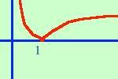
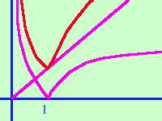

|
Disegnare approssimativamente il grafico per la funzione: y = x + | log x | intanto c'e' da dire che il campo di esistenza per la funzione e' individuato dal fatto di esservi tra le funzioni il logaritmo, quindi dovra' essere C.E. {x Scompongo la funzione: posso considerarla somma di due funzioni  La prima:
y = x bisettrice del primo e terzo quadrante La prima:
y = x bisettrice del primo e terzo quadrante La seconda:
y = |log x|
La seconda:
y = |log x|Per trovare il grafico di quest'ultima funzione posso considerare il grafico di y = log x e poi applicarvi il modulo, cioe' ribalto le parti negative attorno all'asse x.  Ora  la mia funzione di partenza sara' la somma delle funzioni parziali, cioe' bastera' che punto per punto intuitivamente io faccia la somma dei valori che hanno le y delle due funzioni parziali. In viola le due funzioni componenti. In rosso la loro funzione somma. |